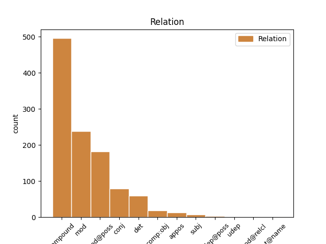
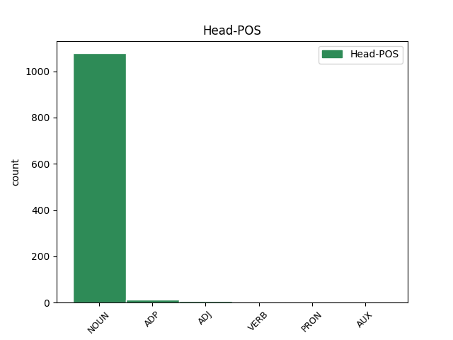
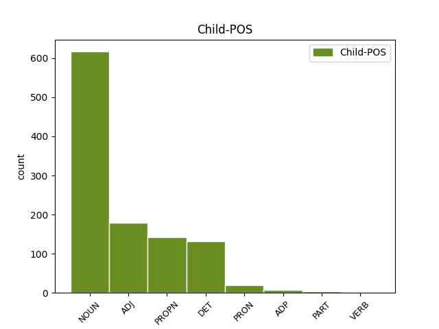

Distribution of features within this leaf



Agreement Rules sorted by frequency.
- When the dependent token is the compound(compound) of the head token, and the head token is NOUN and the dependent token is NOUN.
1 Ystyr ystyr NOUN _ Case=NomAcc|Gender=Masc|Number=Sing 0 _ _ _
2 Leabaidh leabaidh NOUN _ Case=NomAcc|Gender=Masc|Number=Sing 1 compound _ _
3 an _ _ _ _ 0 _ _ _
4 Daimh _ _ _ _ 0 _ _ _
5 Bhuidhe _ _ _ _ 0 _ _ _
6 ydy _ _ _ _ 0 _ _ _
7 " _ _ _ _ 0 _ _ _
8 gwely _ _ _ _ 0 _ _ _
9 ( _ _ _ _ 0 _ _ _
10 neu _ _ _ _ 0 _ _ _
11 borfa)'r _ _ _ _ 0 _ _ _
12 carw _ _ _ _ 0 _ _ _
13 melyn _ _ _ _ 0 _ _ _
14 " _ _ _ _ 0 _ _ _
15 . _ _ _ _ 0 _ _ _
1 Yn _ _ _ _ 0 _ _ _
2 y _ _ _ _ 0 _ _ _
3 Fyddin fyddin NOUN _ Case=NomAcc|Definite=Def|Gender=Masc|Number=Sing 0 _ _ _
4 Brydeinig Brydeinig ADJ _ Case=NomAcc|Gender=Masc|Number=Sing 3 mod _ _
5 mae _ _ _ _ 0 _ _ _
6 sgwadron _ _ _ _ 0 _ _ _
7 dan _ _ _ _ 0 _ _ _
8 arweiniad _ _ _ _ 0 _ _ _
9 uwchgapten _ _ _ _ 0 _ _ _
10 . _ _ _ _ 0 _ _ _
1 Ystyr _ _ _ _ 0 _ _ _
2 Leabaidh _ _ _ _ 0 _ _ _
3 an _ _ _ _ 0 _ _ _
4 Daimh _ _ _ _ 0 _ _ _
5 Bhuidhe _ _ _ _ 0 _ _ _
6 ydy _ _ _ _ 0 _ _ _
7 " _ _ _ _ 0 _ _ _
8 gwely gwely NOUN _ Case=NomAcc|Gender=Masc|Number=Sing 0 _ _ _
9 ( _ _ _ _ 0 _ _ _
10 neu _ _ _ _ 0 _ _ _
11 borfa)'r borf NOUN _ Case=NomAcc|Gender=Masc|Number=Sing 8 conj _ _
12 carw _ _ _ _ 0 _ _ _
13 melyn _ _ _ _ 0 _ _ _
14 " _ _ _ _ 0 _ _ _
15 . _ _ _ _ 0 _ _ _
1 Yn _ _ _ _ 0 _ _ _
2 nhiroedd _ _ _ _ 0 _ _ _
3 Ymerodraeth _ _ _ _ 0 _ _ _
4 Prydain _ _ _ _ 0 _ _ _
5 gynt _ _ _ _ 0 _ _ _
6 ac _ _ _ _ 0 _ _ _
7 yn _ _ _ _ 0 _ _ _
8 America _ _ _ _ 0 _ _ _
9 , _ _ _ _ 0 _ _ _
10 pa _ _ _ _ 0 _ _ _
11 le _ _ _ _ 0 _ _ _
12 bynnag _ NOUN _ Case=NomAcc|Form=Len|Gender=Fem|Number=Sing 0 _ _ _
13 yr _ _ _ _ 0 _ _ _
14 ymfudodd _ NOUN _ Case=NomAcc|Definite=Def|Gender=Fem|Number=Sing 12 mod@poss _ _
15 Cymry _ _ _ _ 0 _ _ _
16 , _ _ _ _ 0 _ _ _
17 y _ _ _ _ 0 _ _ _
18 ceir _ _ _ _ 0 _ _ _
19 enwau _ _ _ _ 0 _ _ _
20 Cymreig _ _ _ _ 0 _ _ _
21 hyd _ _ _ _ 0 _ _ _
22 heddiw _ _ _ _ 0 _ _ _
23 . _ _ _ _ 0 _ _ _
1 Ymhlith _ _ _ _ 0 _ _ _
2 yr _ _ _ _ 0 _ _ _
3 adeiladau _ _ _ _ 0 _ _ _
4 o _ _ _ _ 0 _ _ _
5 ddiddordeb _ _ _ _ 0 _ _ _
6 mae _ _ _ _ 0 _ _ _
7 Palas _ _ _ _ 0 _ _ _
8 Potala _ _ _ _ 0 _ _ _
9 , _ _ _ _ 0 _ _ _
10 Teml _ _ _ _ 0 _ _ _
11 Jokhang _ _ _ _ 0 _ _ _
12 a _ _ _ _ 0 _ _ _
13 Mynachlog Mynachlog NOUN _ Case=NomAcc|Gender=Masc|Number=Sing 0 _ _ _
14 Sera Sera PROPN _ Case=Gen|Gender=Masc|Number=Sing 13 compound _ _
15 . _ _ _ _ 0 _ _ _
1 Y _ _ _ _ 0 _ _ _
2 Plebeiaid _ _ _ _ 0 _ _ _
3 yn _ _ _ _ 0 _ _ _
4 paratoi'r _ _ _ _ 0 _ _ _
5 gwrthryfel _ _ _ _ 0 _ _ _
6 ( _ _ _ _ 0 _ _ _
7 1966 _ _ _ _ 0 _ _ _
8 ) _ _ _ _ 0 _ _ _
9 * _ _ _ _ 0 _ _ _
10 Ausgefragt _ _ _ _ 0 _ _ _
11 ( _ _ _ _ 0 _ _ _
12 cerddi _ _ _ _ 0 _ _ _
13 , _ _ _ _ 0 _ _ _
14 1967 _ _ _ _ 0 _ _ _
15 ) _ _ _ _ 0 _ _ _
16 * _ _ _ _ 0 _ _ _
17 Über _ _ _ _ 0 _ _ _
18 das der DET _ Case=Acc|Definite=Def|Gender=Neut|Number=Sing|PronType=Art 19 det _ _
19 Selbstverständliche Selbstverständliche NOUN _ Case=Acc|Gender=Neut|Number=Sing 0 _ _ _
20 . _ _ _ _ 0 _ _ _
1 Yna _ _ _ _ 0 _ _ _
2 fe _ _ _ _ 0 _ _ _
3 briododd _ _ _ _ 0 _ _ _
4 Ann _ _ _ _ 0 _ _ _
5 Beynon _ _ _ _ 0 _ _ _
6 a _ _ _ _ 0 _ _ _
7 cafodd _ _ _ _ 0 _ _ _
8 merch merch NOUN _ Case=NomAcc|Gender=Fem|Number=Sing 0 _ _ _
9 a _ _ _ _ 0 _ _ _
10 mab mab NOUN _ Case=NomAcc|Form=Len|Gender=Fem|Number=Sing 8 mod _ _
11 o'i _ _ _ _ 0 _ _ _
12 ail _ _ _ _ 0 _ _ _
13 briodas _ _ _ _ 0 _ _ _
14 . _ _ _ _ 0 _ _ _
1 Wrth _ _ _ _ 0 _ _ _
2 wneud _ _ _ _ 0 _ _ _
3 ei is DET _ Gender=Masc|Number=Sing|Person=3|Poss=Yes 4 mod@poss _ _
4 waith waith NOUN _ Case=NomAcc|Definite=Def|Gender=Masc|Number=Sing 0 _ _ _
5 , _ _ _ _ 0 _ _ _
6 mae'r _ _ _ _ 0 _ _ _
7 pensil _ _ _ _ 0 _ _ _
8 yn _ _ _ _ 0 _ _ _
9 gadael _ _ _ _ 0 _ _ _
10 rhan _ _ _ _ 0 _ _ _
11 ohono _ _ _ _ 0 _ _ _
12 ar _ _ _ _ 0 _ _ _
13 ôl _ _ _ _ 0 _ _ _
14 , _ _ _ _ 0 _ _ _
15 a'r _ _ _ _ 0 _ _ _
16 gronynnau _ _ _ _ 0 _ _ _
17 mân _ _ _ _ 0 _ _ _
18 hyn _ _ _ _ 0 _ _ _
19 ydy'r _ _ _ _ 0 _ _ _
20 marc _ _ _ _ 0 _ _ _
21 a _ _ _ _ 0 _ _ _
22 welir _ _ _ _ 0 _ _ _
23 ar _ _ _ _ 0 _ _ _
24 y _ _ _ _ 0 _ _ _
25 papur _ _ _ _ 0 _ _ _
26 . _ _ _ _ 0 _ _ _
1 Stephens _ _ _ _ 0 _ _ _
2 t. _ _ _ _ 0 _ _ _
3 3 _ _ _ _ 0 _ _ _
4 Cysylltodd _ _ _ _ 0 _ _ _
5 y _ _ _ _ 0 _ _ _
6 gerdd gerdd NOUN _ Case=NomAcc|Definite=Def|Gender=Masc|Number=Sing 0 _ _ _
7 a _ _ _ _ 0 _ _ _
8 Brwydr Brwydr PROPN _ Case=NomAcc|Gender=Masc|Number=Sing 6 mod _ _
9 Degsastan _ _ _ _ 0 _ _ _
10 tua _ _ _ _ 0 _ _ _
11 603 _ _ _ _ 0 _ _ _
12 rhwng _ _ _ _ 0 _ _ _
13 Æthelfrith _ _ _ _ 0 _ _ _
14 , _ _ _ _ 0 _ _ _
15 brenin _ _ _ _ 0 _ _ _
16 Brynaich _ _ _ _ 0 _ _ _
17 a _ _ _ _ 0 _ _ _
18 Dál _ _ _ _ 0 _ _ _
19 Riata _ _ _ _ 0 _ _ _
20 dan _ _ _ _ 0 _ _ _
21 Áedán _ _ _ _ 0 _ _ _
22 mac _ _ _ _ 0 _ _ _
23 Gabráin _ _ _ _ 0 _ _ _
24 . _ _ _ _ 0 _ _ _
1 Yn _ _ _ _ 0 _ _ _
2 ôl _ _ _ _ 0 _ _ _
3 y _ _ _ _ 0 _ _ _
4 testunau _ _ _ _ 0 _ _ _
5 cyfraith _ _ _ _ 0 _ _ _
6 Wyddelig _ _ _ _ 0 _ _ _
7 cynnar _ _ _ _ 0 _ _ _
8 , _ _ _ _ 0 _ _ _
9 yr _ _ _ _ 0 _ _ _
10 oedd _ _ _ _ 0 _ _ _
11 rhaid _ _ _ _ 0 _ _ _
12 i'r _ _ _ _ 0 _ _ _
13 túath _ _ _ _ 0 _ _ _
14 gael _ _ _ _ 0 _ _ _
15 brenin brenin NOUN _ Case=NomAcc|Gender=Masc|Number=Sing 0 _ _ _
16 , _ _ _ _ 0 _ _ _
17 ysgolhaig ysgolhaig NOUN _ Case=NomAcc|Gender=Masc|Number=Sing 15 appos _ _
18 eglwysig _ _ _ _ 0 _ _ _
19 ( _ _ _ _ 0 _ _ _
20 ecnae _ _ _ _ 0 _ _ _
21 ) _ _ _ _ 0 _ _ _
22 , _ _ _ _ 0 _ _ _
23 clerigwr _ _ _ _ 0 _ _ _
24 a _ _ _ _ 0 _ _ _
25 bardd _ _ _ _ 0 _ _ _
26 i _ _ _ _ 0 _ _ _
27 gyfrif _ _ _ _ 0 _ _ _
28 fel _ _ _ _ 0 _ _ _
29 túath _ _ _ _ 0 _ _ _
30 go _ _ _ _ 0 _ _ _
31 iawn _ _ _ _ 0 _ _ _
32 . _ _ _ _ 0 _ _ _
1 Wedi _ _ _ _ 0 _ _ _
2 ei _ _ _ _ 0 _ _ _
3 charcharu _ _ _ _ 0 _ _ _
4 aeth _ _ _ _ 0 _ _ _
5 Mrs _ _ _ _ 0 _ _ _
6 Mackworth _ _ _ _ 0 _ _ _
7 ar _ _ _ _ 0 _ _ _
8 streic streic NOUN _ Case=NomAcc|Gender=Masc|Number=Sing 0 _ _ _
9 newyn newyn ADJ _ Case=NomAcc|Gender=Masc|Number=Sing 8 compound _ _
10 . _ _ _ _ 0 _ _ _
1 Roedd _ _ _ _ 0 _ _ _
2 Rhode _ _ _ _ 0 _ _ _
3 Island _ _ _ _ 0 _ _ _
4 yn _ _ _ _ 0 _ _ _
5 un _ _ _ _ 0 _ _ _
6 o _ _ _ _ 0 _ _ _
7 13 _ _ _ _ 0 _ _ _
8 talaith talaith NOUN _ Case=NomAcc|Form=Len|Gender=Fem|Number=Sing 0 _ _ _
9 gwreiddiol _ _ _ _ 0 _ _ _
10 yr _ _ _ _ 0 _ _ _
11 Unol _ PROPN _ Case=NomAcc|Definite=Def|Gender=Fem|Number=Sing 8 mod@poss _ _
12 Daleithiau _ _ _ _ 0 _ _ _
13 a'r _ _ _ _ 0 _ _ _
14 gyntaf _ _ _ _ 0 _ _ _
15 i _ _ _ _ 0 _ _ _
16 ddatgan _ _ _ _ 0 _ _ _
17 ei _ _ _ _ 0 _ _ _
18 hannibyniaeth _ _ _ _ 0 _ _ _
19 ar _ _ _ _ 0 _ _ _
20 Brydain _ _ _ _ 0 _ _ _
21 . _ _ _ _ 0 _ _ _
1 Mae'r _ _ _ _ 0 _ _ _
2 iaith _ _ _ _ 0 _ _ _
3 yn _ _ _ _ 0 _ _ _
4 perthyn _ _ _ _ 0 _ _ _
5 i _ _ _ _ 0 _ _ _
6 is _ _ _ _ 0 _ _ _
7 - _ _ _ _ 0 _ _ _
8 deulu _ _ _ _ 0 _ _ _
9 Tupi _ _ _ _ 0 _ _ _
10 - _ _ _ _ 0 _ _ _
11 Guaraní _ _ _ _ 0 _ _ _
12 , _ _ _ _ 0 _ _ _
13 ac _ _ _ _ 0 _ _ _
14 mae _ _ _ _ 0 _ _ _
15 ganddi _ _ _ _ 0 _ _ _
16 ei _ _ _ _ 0 _ _ _
17 gwyddor _ NOUN _ Case=NomAcc|Form=Len|Gender=Fem|Number=Sing 0 _ _ _
18 ei is PRON _ Gender=Fem|Number=Sing|Person=3 17 mod@poss _ _
19 hyn _ _ _ _ 0 _ _ _
20 . _ _ _ _ 0 _ _ _
1 Ni _ _ _ _ 0 _ _ _
2 wnaeth wnaeth VERB _ Case=NomAcc|Gender=Masc|Number=Sing 0 _ _ _
3 briodi briodi NOUN _ Case=Gen|Gender=Masc|Number=Sing 2 comp:obj _ _
4 na _ _ _ _ 0 _ _ _
5 chael _ _ _ _ 0 _ _ _
6 plant _ _ _ _ 0 _ _ _
7 . _ _ _ _ 0 _ _ _
1 Enillodd enillodd NOUN _ Case=NomAcc|Gender=Masc|Number=Sing 0 _ _ _
2 Gadair gadair NOUN _ Case=NomAcc|Gender=Masc|Number=Sing 1 comp:obj _ _
3 , _ _ _ _ 0 _ _ _
4 Coron _ _ _ _ 0 _ _ _
5 a _ _ _ _ 0 _ _ _
6 Medal _ _ _ _ 0 _ _ _
7 Ryddiaith _ _ _ _ 0 _ _ _
8 Eisteddfod _ _ _ _ 0 _ _ _
9 Môn _ _ _ _ 0 _ _ _
10 . _ _ _ _ 0 _ _ _
1 Mae _ _ _ _ 0 _ _ _
2 gwasanaeth _ _ _ _ 0 _ _ _
3 fferi _ _ _ _ 0 _ _ _
4 yn _ _ _ _ 0 _ _ _
5 cysylltu _ _ _ _ 0 _ _ _
6 Uig _ _ _ _ 0 _ _ _
7 ag _ _ _ _ 0 _ _ _
8 An _ _ _ _ 0 _ _ _
9 Tairbeart tairbeart NOUN _ Case=NomAcc|Gender=Masc|Number=Sing 0 _ _ _
10 ar _ _ _ _ 0 _ _ _
11 Na _ _ _ _ 0 _ _ _
12 Hearadh _ _ _ _ 0 _ _ _
13 ( _ _ _ _ 0 _ _ _
14 Harris Harris PROPN _ Case=NomAcc|Gender=Masc|Number=Sing 9 appos _ _
15 ) _ _ _ _ 0 _ _ _
16 a _ _ _ _ 0 _ _ _
17 Lochmaddy _ _ _ _ 0 _ _ _
18 ar _ _ _ _ 0 _ _ _
19 Uibhist _ _ _ _ 0 _ _ _
20 a _ _ _ _ 0 _ _ _
21 Tuath _ _ _ _ 0 _ _ _
22 ( _ _ _ _ 0 _ _ _
23 North _ _ _ _ 0 _ _ _
24 Uist _ _ _ _ 0 _ _ _
25 ) _ _ _ _ 0 _ _ _
26 , _ _ _ _ 0 _ _ _
27 a _ _ _ _ 0 _ _ _
28 fferi _ _ _ _ 0 _ _ _
29 yn _ _ _ _ 0 _ _ _
30 cysylltu _ _ _ _ 0 _ _ _
31 Sconser _ _ _ _ 0 _ _ _
32 ag _ _ _ _ 0 _ _ _
33 ynys _ _ _ _ 0 _ _ _
34 fechan _ _ _ _ 0 _ _ _
35 Raasay _ _ _ _ 0 _ _ _
36 . _ _ _ _ 0 _ _ _
1 Darlun darlun NOUN _ Case=NomAcc|Gender=Masc|Number=Sing 0 _ _ _
2 o'r o'r ADP _ Case=NomAcc|Gender=Masc|Number=Sing 1 compound _ _
3 Preutur _ _ _ _ 0 _ _ _
4 Siôn _ _ _ _ 0 _ _ _
5 ar _ _ _ _ 0 _ _ _
6 fap _ _ _ _ 0 _ _ _
7 o _ _ _ _ 0 _ _ _
8 Ddwyrain _ _ _ _ 0 _ _ _
9 Affrica _ _ _ _ 0 _ _ _
10 , _ _ _ _ 0 _ _ _
11 1558 _ _ _ _ 0 _ _ _
12 . _ _ _ _ 0 _ _ _
1 Ni _ _ _ _ 0 _ _ _
2 anwylodd _ _ _ _ 0 _ _ _
3 ymdriniaeth _ _ _ _ 0 _ _ _
4 Street _ _ _ _ 0 _ _ _
5 - _ _ _ _ 0 _ _ _
6 Porter _ _ _ _ 0 _ _ _
7 o'i _ _ _ _ 0 _ _ _
8 gwaith gwaith NOUN _ Case=NomAcc|Form=Len|Gender=Fem|Number=Sing 0 _ _ _
9 hi hi PRON _ Gender=Fem|Number=Sing|Person=3 8 det _ _
10 at _ _ _ _ 0 _ _ _
11 ei _ _ _ _ 0 _ _ _
12 beirniaid _ _ _ _ 0 _ _ _
13 , _ _ _ _ 0 _ _ _
14 a _ _ _ _ 0 _ _ _
15 wrthwynebodd _ _ _ _ 0 _ _ _
16 ei _ _ _ _ 0 _ _ _
17 hynganiad _ _ _ _ 0 _ _ _
18 gan _ _ _ _ 0 _ _ _
19 gwestiynu _ _ _ _ 0 _ _ _
20 ei _ _ _ _ 0 _ _ _
21 haddasrwydd _ _ _ _ 0 _ _ _
22 fel _ _ _ _ 0 _ _ _
23 dylanwad _ _ _ _ 0 _ _ _
24 ar _ _ _ _ 0 _ _ _
25 ieuenctid _ _ _ _ 0 _ _ _
26 Prydain _ _ _ _ 0 _ _ _
27 . _ _ _ _ 0 _ _ _
1 Pont pont NOUN _ Case=NomAcc|Gender=Masc|Number=Sing 0 _ _ _
2 ar _ _ _ _ 0 _ _ _
3 afon _ _ _ _ 0 _ _ _
4 Tawe Tawe PROPN _ Case=NomAcc|Gender=Masc|Number=Sing 1 subj _ _
5 ar _ _ _ _ 0 _ _ _
6 gwr _ _ _ _ 0 _ _ _
7 Abercraf _ _ _ _ 0 _ _ _
8 . _ _ _ _ 0 _ _ _
1 Ymosododd _ _ _ _ 0 _ _ _
2 Ghengis _ _ _ _ 0 _ _ _
3 Khan _ _ _ _ 0 _ _ _
4 ar _ _ _ _ 0 _ _ _
5 Hsi Hsi NOUN _ Case=NomAcc|Gender=Masc|Number=Sing 0 _ _ _
6 - _ _ _ _ 0 _ _ _
7 hsia _ _ _ _ 0 _ _ _
8 neu _ _ _ _ 0 _ _ _
9 Xixia Xixia PROPN _ Case=NomAcc|Gender=Masc|Number=Sing 5 conj _ _
10 . _ _ _ _ 0 _ _ _
1 Priododd _ _ _ _ 0 _ _ _
2 Fanny _ _ _ _ 0 _ _ _
3 ail _ _ _ _ 0 _ _ _
4 ferch _ _ _ _ 0 _ _ _
5 William _ _ _ _ 0 _ _ _
6 Mostyn _ _ _ _ 0 _ _ _
7 Owen _ _ _ _ 0 _ _ _
8 o _ _ _ _ 0 _ _ _
9 Woodhouse _ _ _ _ 0 _ _ _
10 , _ _ _ _ 0 _ _ _
11 Croesoswallt _ _ _ _ 0 _ _ _
12 bu _ _ _ _ 0 _ _ _
13 iddynt _ _ _ _ 0 _ _ _
14 dau da ADP _ Gender=Masc|Number=Sing|Person=3|Poss=Yes 0 _ _ _
15 fab fab NOUN _ Case=NomAcc|Definite=Def|Gender=Masc|Number=Sing 14 comp:obj _ _
16 a _ _ _ _ 0 _ _ _
17 thair _ _ _ _ 0 _ _ _
18 merch _ _ _ _ 0 _ _ _
19 . _ _ _ _ 0 _ _ _
1 Tai tai NOUN _ Case=NomAcc|Gender=Masc|Number=Sing 0 _ _ _
2 haf _ _ _ _ 0 _ _ _
3 ar _ _ _ _ 0 _ _ _
4 draeth _ _ _ _ 0 _ _ _
5 Aberdesach _ _ _ _ 0 _ _ _
6 Pentref pentref NOUN _ Case=NomAcc|Definite=Def|Gender=Masc|Number=Sing 1 subj _ _
7 bychan _ _ _ _ 0 _ _ _
8 ar _ _ _ _ 0 _ _ _
9 arfordir _ _ _ _ 0 _ _ _
10 gogleddol _ _ _ _ 0 _ _ _
11 Gwynedd _ _ _ _ 0 _ _ _
12 yw _ _ _ _ 0 _ _ _
13 Aberdesach _ _ _ _ 0 _ _ _
14 . _ _ _ _ 0 _ _ _
1 Cwmni _ _ _ _ 0 _ _ _
2 sy'n _ _ _ _ 0 _ _ _
3 berchen _ _ _ _ 0 _ _ _
4 ar _ _ _ _ 0 _ _ _
5 rwydwaith _ _ _ _ 0 _ _ _
6 o _ _ _ _ 0 _ _ _
7 orsafoedd _ _ _ _ 0 _ _ _
8 radio _ _ _ _ 0 _ _ _
9 lleol _ _ _ _ 0 _ _ _
10 , _ _ _ _ 0 _ _ _
11 rhanbarthol _ ADJ _ Case=NomAcc|Gender=Fem|Number=Plur 0 _ _ _
12 a _ _ _ _ 0 _ _ _
13 chenedlaethol _ ADJ _ Case=NomAcc|Gender=Fem|Number=Plur 11 conj _ _
14 yw _ _ _ _ 0 _ _ _
15 GCap _ _ _ _ 0 _ _ _
16 Media _ _ _ _ 0 _ _ _
17 . _ _ _ _ 0 _ _ _
1 Dim dim PRON _ Case=NomAcc|Gender=Masc|Number=Sing 0 _ _ _
2 ond _ _ _ _ 0 _ _ _
3 culfan culfan NOUN _ Case=NomAcc|Gender=Masc|Number=Sing 1 compound _ _
4 fach _ _ _ _ 0 _ _ _
5 sydd _ _ _ _ 0 _ _ _
6 ar _ _ _ _ 0 _ _ _
7 gael _ _ _ _ 0 _ _ _
8 i _ _ _ _ 0 _ _ _
9 barcio _ _ _ _ 0 _ _ _
10 ceir _ _ _ _ 0 _ _ _
11 gerllaw'r _ _ _ _ 0 _ _ _
12 orsaf _ _ _ _ 0 _ _ _
13 . _ _ _ _ 0 _ _ _
1 Dur dur ADJ _ Case=NomAcc|Gender=Masc|Number=Sing 0 _ _ _
2 Pont Pont NOUN _ Case=NomAcc|Gender=Masc|Number=Sing 1 compound _ _
3 ddur _ _ _ _ 0 _ _ _
4 Aloi _ _ _ _ 0 _ _ _
5 caled _ _ _ _ 0 _ _ _
6 , _ _ _ _ 0 _ _ _
7 cryf _ _ _ _ 0 _ _ _
8 a _ _ _ _ 0 _ _ _
9 hydrin _ _ _ _ 0 _ _ _
10 wedi'i _ _ _ _ 0 _ _ _
11 greu _ _ _ _ 0 _ _ _
12 o _ _ _ _ 0 _ _ _
13 haearn _ _ _ _ 0 _ _ _
14 a _ _ _ _ 0 _ _ _
15 charbon _ _ _ _ 0 _ _ _
16 yw _ _ _ _ 0 _ _ _
17 dur _ _ _ _ 0 _ _ _
18 . _ _ _ _ 0 _ _ _
1 Ei _ _ _ _ 0 _ _ _
2 fywyd _ _ _ _ 0 _ _ _
3 a'i a' ADP _ Gender=Masc|Number=Sing|Person=3|Poss=Yes 4 udep@poss _ _
4 waith waith NOUN _ Case=NomAcc|Definite=Def|Gender=Masc|Number=Sing 0 _ _ _
5 Cafodd _ _ _ _ 0 _ _ _
6 marwolaeth _ _ _ _ 0 _ _ _
7 ei _ _ _ _ 0 _ _ _
8 dad _ _ _ _ 0 _ _ _
9 a _ _ _ _ 0 _ _ _
10 laddwyd _ _ _ _ 0 _ _ _
11 gan _ _ _ _ 0 _ _ _
12 fetel _ _ _ _ 0 _ _ _
13 tawdd _ _ _ _ 0 _ _ _
14 yn _ _ _ _ 0 _ _ _
15 y _ _ _ _ 0 _ _ _
16 gwaith _ _ _ _ 0 _ _ _
17 tun _ _ _ _ 0 _ _ _
18 effaith _ _ _ _ 0 _ _ _
19 ddofn _ _ _ _ 0 _ _ _
20 arno _ _ _ _ 0 _ _ _
21 . _ _ _ _ 0 _ _ _
1 Mae _ _ _ _ 0 _ _ _
2 gan _ _ _ _ 0 _ _ _
3 y _ _ _ _ 0 _ _ _
4 dalaith _ _ _ _ 0 _ _ _
5 arwynebedd _ _ _ _ 0 _ _ _
6 o _ _ _ _ 0 _ _ _
7 2,422 _ _ _ _ 0 _ _ _
8 km² _ _ _ _ 0 _ _ _
9 , _ _ _ _ 0 _ _ _
10 a a PART _ Gender=Masc|Number=Sing|Person=3|Poss=Yes 11 det _ _
11 phoblogaeth hoblogaeth NOUN _ Case=NomAcc|Form=Ecl|Gender=Masc|Number=Sing 0 _ _ _
12 o _ _ _ _ 0 _ _ _
13 805,786 _ _ _ _ 0 _ _ _
14 . _ _ _ _ 0 _ _ _
1 Tsineaid tsine NOUN _ Case=NomAcc|Gender=Masc|Number=Plur 0 _ _ _
2 Han Han PROPN _ Case=NomAcc|Gender=Masc|Number=Sing 1 comp:obj _ _
3 mewn _ _ _ _ 0 _ _ _
4 brown _ _ _ _ 0 _ _ _
5 . _ _ _ _ 0 _ _ _
1 Yn _ _ _ _ 0 _ _ _
2 Ogof _ _ _ _ 0 _ _ _
3 Kendrick _ _ _ _ 0 _ _ _
4 ar _ _ _ _ 0 _ _ _
5 Ben _ _ _ _ 0 _ _ _
6 y _ _ _ _ 0 _ _ _
7 Gogarth _ _ _ _ 0 _ _ _
8 ceir _ _ _ _ 0 _ _ _
9 olion _ _ _ _ 0 _ _ _
10 naddu _ _ _ _ 0 _ _ _
11 ar _ _ _ _ 0 _ _ _
12 asgwrn _ _ _ _ 0 _ _ _
13 gên _ _ _ _ 0 _ _ _
14 ceffyl _ _ _ _ 0 _ _ _
15 ac _ _ _ _ 0 _ _ _
16 ar _ _ _ _ 0 _ _ _
17 ddannedd _ _ _ _ 0 _ _ _
18 gwartheg _ ADJ _ Case=NomAcc|Gender=Masc|Number=Sing 0 _ _ _
19 gwyllt _ ADJ _ Case=NomAcc|Gender=Masc|Number=Sing 18 mod _ _
20 a _ _ _ _ 0 _ _ _
21 cheirw _ _ _ _ 0 _ _ _
22 a _ _ _ _ 0 _ _ _
23 gellir _ _ _ _ 0 _ _ _
24 dyddio _ _ _ _ 0 _ _ _
25 rhain _ _ _ _ 0 _ _ _
26 i _ _ _ _ 0 _ _ _
27 ddiwedd _ _ _ _ 0 _ _ _
28 Hen _ _ _ _ 0 _ _ _
29 Oes _ _ _ _ 0 _ _ _
30 y _ _ _ _ 0 _ _ _
31 Cerrig _ _ _ _ 0 _ _ _
32 Uchaf _ _ _ _ 0 _ _ _
33 : _ _ _ _ 0 _ _ _
34 10,000 _ _ _ _ 0 _ _ _
35 CP _ _ _ _ 0 _ _ _
36 . _ _ _ _ 0 _ _ _
1 Ysgolhaig ysgolhaig NOUN _ Case=NomAcc|Gender=Masc|Number=Sing 0 _ _ _
2 a'i a' PART _ Gender=Masc|Number=Sing|Person=3|Poss=Yes 1 compound _ _
3 Lyfrau _ _ _ _ 0 _ _ _
4 gan _ _ _ _ 0 _ _ _
5 Gerbrand _ _ _ _ 0 _ _ _
6 van _ _ _ _ 0 _ _ _
7 den _ _ _ _ 0 _ _ _
8 Eeckhout _ _ _ _ 0 _ _ _
9 ( _ _ _ _ 0 _ _ _
10 1671 _ _ _ _ 0 _ _ _
11 ) _ _ _ _ 0 _ _ _
12 . _ _ _ _ 0 _ _ _
Disagree Examples:
1 10fed _ _ _ _ 0 _ _ _
2 o _ _ _ _ 0 _ _ _
3 Ionawr _ _ _ _ 0 _ _ _
4 Parhaodd _ _ _ _ 0 _ _ _
5 ymgyrch _ _ _ _ 0 _ _ _
6 bomio _ _ _ _ 0 _ _ _
7 Israel _ _ _ _ 0 _ _ _
8 dros _ _ _ _ 0 _ _ _
9 nos _ _ _ _ 0 _ _ _
10 gydag _ _ _ _ 0 _ _ _
11 o _ _ _ _ 0 _ _ _
12 leiaf _ _ _ _ 0 _ _ _
13 40 _ _ _ _ 0 _ _ _
14 o _ _ _ _ 0 _ _ _
15 gyrchoedd _ NOUN _ Case=NomAcc|Form=Len|Gender=Fem|Number=Sing 0 _ _ _
16 awyr awyr NOUN _ Case=Gen|Gender=Masc|Number=Sing 15 compound _ _
17 a _ _ _ _ 0 _ _ _
18 saethu _ _ _ _ 0 _ _ _
19 gan _ _ _ _ 0 _ _ _
20 danciau _ _ _ _ 0 _ _ _
21 . _ _ _ _ 0 _ _ _
1 Ac _ _ _ _ 0 _ _ _
2 ar _ _ _ _ 0 _ _ _
3 ddiwrnod _ _ _ _ 0 _ _ _
4 ei is DET _ Gender=Masc|Number=Sing|Person=3|Poss=Yes 5 det _ _
5 farwolaeth farwolaeth NOUN _ Case=NomAcc|Definite=Def|Gender=Fem|Number=Sing 0 _ _ _
6 , _ _ _ _ 0 _ _ _
7 ni _ _ _ _ 0 _ _ _
8 wyddai _ _ _ _ 0 _ _ _
9 Edmwnd _ _ _ _ 0 _ _ _
10 fod _ _ _ _ 0 _ _ _
11 yn _ _ _ _ 0 _ _ _
12 ei _ _ _ _ 0 _ _ _
13 chroth _ _ _ _ 0 _ _ _
14 blentyn _ _ _ _ 0 _ _ _
15 - _ _ _ _ 0 _ _ _
16 Harri _ _ _ _ 0 _ _ _
17 . _ _ _ _ 0 _ _ _
1 Ac _ _ _ _ 0 _ _ _
2 ar _ _ _ _ 0 _ _ _
3 ddiwrnod _ _ _ _ 0 _ _ _
4 ei _ _ _ _ 0 _ _ _
5 farwolaeth _ _ _ _ 0 _ _ _
6 , _ _ _ _ 0 _ _ _
7 ni _ _ _ _ 0 _ _ _
8 wyddai _ _ _ _ 0 _ _ _
9 Edmwnd _ _ _ _ 0 _ _ _
10 fod _ _ _ _ 0 _ _ _
11 yn _ _ _ _ 0 _ _ _
12 ei ei DET _ Gender=Masc|Number=Sing|Person=3|Poss=Yes 13 det _ _
13 chroth _ NOUN _ Case=NomAcc|Form=Len|Gender=Fem|Number=Sing 0 _ _ _
14 blentyn _ _ _ _ 0 _ _ _
15 - _ _ _ _ 0 _ _ _
16 Harri _ _ _ _ 0 _ _ _
17 . _ _ _ _ 0 _ _ _
1 Ac _ _ _ _ 0 _ _ _
2 ar _ _ _ _ 0 _ _ _
3 ddiwrnod _ _ _ _ 0 _ _ _
4 ei _ _ _ _ 0 _ _ _
5 farwolaeth _ _ _ _ 0 _ _ _
6 , _ _ _ _ 0 _ _ _
7 ni _ _ _ _ 0 _ _ _
8 wyddai _ _ _ _ 0 _ _ _
9 Edmwnd _ _ _ _ 0 _ _ _
10 fod _ _ _ _ 0 _ _ _
11 yn _ _ _ _ 0 _ _ _
12 ei _ _ _ _ 0 _ _ _
13 chroth _ NOUN _ Case=NomAcc|Form=Len|Gender=Fem|Number=Sing 0 _ _ _
14 blentyn blentyn ADJ _ Case=NomAcc|Gender=Masc|Number=Sing 13 mod _ _
15 - _ _ _ _ 0 _ _ _
16 Harri _ _ _ _ 0 _ _ _
17 . _ _ _ _ 0 _ _ _
1 Ac _ _ _ _ 0 _ _ _
2 er _ _ _ _ 0 _ _ _
3 gwaetha gwaethe ADJ _ Definite=Ind|Gender=Neut|Number=Sing|VerbForm=Part 0 _ _ _
4 ein _ _ _ _ 0 _ _ _
5 bywyd bywyd NOUN _ Definite=Ind|Gender=Masc|Number=Sing 3 comp:obj _ _
6 soffistigedig _ _ _ _ 0 _ _ _
7 , _ _ _ _ 0 _ _ _
8 trefol _ _ _ _ 0 _ _ _
9 . _ _ _ _ 0 _ _ _